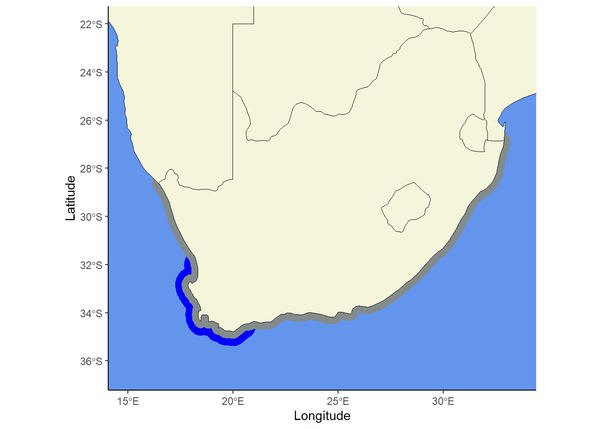

#install packages
# install.packages("rnaturalearth")
# install.packages("sf")
# install.packages("dplyr")
# install.packages("rnaturalearthdata")
# load in libs
library(rnaturalearth)
library(rnaturalearthdata)
library(tidyverse)
library(sf)
library(dplyr)
library(ggplot2)
# for the buffer to work as I expect, swith off
# the functions for spherical geometry:
sf_use_s2(FALSE)Coastline of South Africa
Reason
The map that will be created in this qmd/html file will be used to indicate my sampling sites. Since I am assessing the dependency of line-fish along the coast, my site will span from the west the east coast of South Africa. The distribution of kelp forests will be indicated in the map, to display revelance to the research topic.
Creating the map
- Step 1: Create parameters
First load in libraries
Will be used for buffer of line-fish For longitude
# the full map extent:
xmin <- 15
xmax <- 33.5
xlim <- c(xmin, xmax)For latitude
ymin <- -36.5
ymax <- -22
ylim <- c(ymin, ymax)Create a bounding box
bbox1 <- st_bbox(c(xmin = xmin, ymin = ymin,
xmax = xmax, ymax = ymax))Will be used for buffer of kelp forests For longitude
# make a bounding box for cropping:
xmi <- 15
xma <- 20.5
xli <- c(xmi, xma)For latitude
ymi <- -37.5
yma <- -32
yli <- c(ymi, yma)For bounding box
bbox2 <- st_bbox(c(xmin = xmi, ymin = ymi,
xmax = xma, ymax = yma))Something else
# might be useful for zooming into a smaller region (False Bay and
# the Cape Peninsula):
xlim_zoom <- c(17.8, 19); ylim_zoom <- c(-34.5, -33.2)- Step 1: Making the map of South Africa
Load in the countries
Load in South africa along with the countries surrounding it to get a proper map view. Add in 2 countries within Africa.
safrica_countries <- ne_countries(returnclass = "sf",
continent = "Africa",
country = c("South Africa", "Mozambique",
"Namibia", "Zimbabwe", "Botswana",
"Lesotho", "Eswatini"),
scale = "medium")Create map
# Used for later code
# ggplot()+
# geom_sf(data = safrica_countries,
# colour = "black", fill = "white") +
# coord_sf(xlim = xlim,
# ylim = ylim) +
# theme_classic() +
# xlab("Longitude") +
# ylab("Latitude") +
# theme(panel.background = element_rect(fill= "lightblue")) - Step 2: Buffer for line-fish distribution
First lets make a map of South Africa
safrica <- ne_countries(returnclass = 'sf',
continent = "Africa",
country = c("South Africa"),
scale = "medium")Add in bounding box
safrica_countries_new <- safrica |>
group_by(continent) |>
summarise() |>
st_crop(bbox1) |>
st_combine()although coordinates are longitude/latitude, st_union assumes that they are
planaralthough coordinates are longitude/latitude, st_intersection assumes that they
are planarWarning: attribute variables are assumed to be spatially constant throughout
all geometriesAdd in buffer
buffer <- safrica_countries_new %>%
st_buffer(0.3)Warning in st_buffer.sfc(., 0.3): st_buffer does not correctly buffer
longitude/latitude datadist is assumed to be in decimal degrees (arc_degrees).Lets plot to make sure its correct
# ggplot()+
# geom_sf(data = buffer, colour = "blue", fill = "blue") +
# geom_sf(data = safrica_countries,
# colour = "black", fill = "white") +
# coord_sf(xlim = xlim,
# ylim = ylim) +
# theme_classic() +
# xlab("Longitude") +
# ylab("Latitude") +
# theme(panel.background = element_rect(fill= "lightblue"))- Step 3: Add in buffer
First lets make a map of South Africa
safrica <- ne_countries(returnclass = 'sf',
continent = "Africa",
country = c("South Africa"),
scale = "medium")Add in bounding box
safrica_countries_kf <- safrica |>
group_by(continent) |>
summarise() |>
st_crop(bbox2) |>
st_combine()although coordinates are longitude/latitude, st_union assumes that they are
planaralthough coordinates are longitude/latitude, st_intersection assumes that they
are planarWarning: attribute variables are assumed to be spatially constant throughout
all geometriesbuffer_kf <- safrica_countries_kf |>
st_buffer(0.6) Warning in st_buffer.sfc(safrica_countries_kf, 0.6): st_buffer does not
correctly buffer longitude/latitude datadist is assumed to be in decimal degrees (arc_degrees).Check buffer
# ggplot()+
# geom_sf(data = buffer_kf, colour = "blue", fill = "blue") +
# geom_sf(data = safrica_countries_kf,
# colour = "black", fill = "white") +
# coord_sf(xlim = xlim,
# ylim = ylim) +
# theme_classic() +
# xlab("Longitude") +
# ylab("Latitude") +
# theme(panel.background = element_rect(fill= "lightblue"))- Step 4: Combine buffers and map
ggplot()+
geom_sf(data = buffer_kf, fill = "blue", col = "transparent") +
geom_sf(data = buffer, fill = "azure4", col = "transparent") +
geom_sf(data = safrica_countries,
colour = "black", fill = "beige") +
coord_sf(xlim = xlim,
ylim = ylim) +
theme_classic() +
xlab("Longitude") +
ylab("Latitude") +
theme(panel.background = element_rect(fill= "cornflowerblue"))